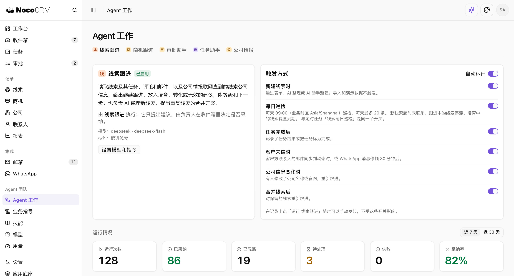
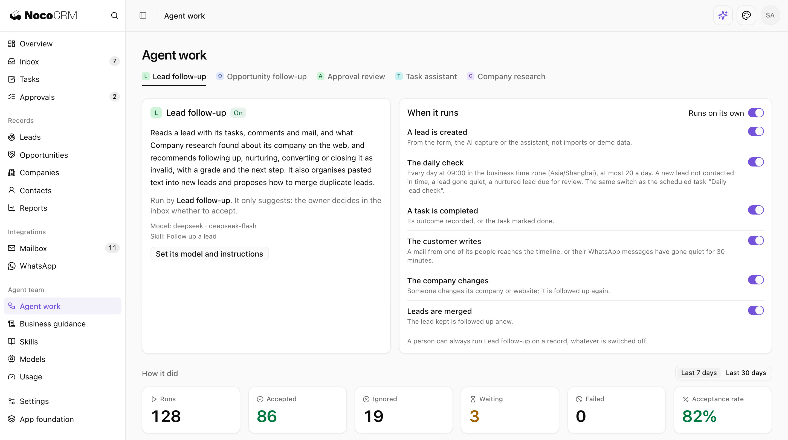

NocoBase SolutionsNocoCRM ·
给你的销售，配一支 7×24 的 Agent 团队。 Your sales team just gained a 24/7 agent team.
在线体验 NocoCRM Try NocoCRM online
Agent 处理了 37 项日常工作， Agents handled 37 routine tasks today. 需要你拍板的只有 6 件。 Only 6 needed your decision.
周二 · 陈思的一天 Tuesday · a day for Ava
不用靠人惦记， Nothing falls through the cracks. 每个客户动态都有 Agent 自动跟进。 Agents follow up on every event automatically.
客户的一条消息，接下来发生了什么 One message from a customer, and what happens next
10:42
决策人主动要求见面，意向明显升高 The decision-maker asked to meet, showing higher intent 要私有化部署，符合企业版 Wants self-hosting, an Enterprise fit 报价已发 9 天，正处在窗口期 Quote sent 9 days ago, right in the follow-up window
每条建议都写明结论、把握和依据。 Every suggestion states the call, confidence, and reasoning.
收件箱 Inbox
邮件、WhatsApp、电话和会议， Email, WhatsApp, calls, and meetings, 每次客户沟通都自动归档、无缝衔接。 every touchpoint captured and connected.
华岳酒店 · 门店运营平台 Huayue Hotels · Store ops platform
邮件一到，记录已更新、草稿已就绪。 When an email lands, the record is updated and a reply is drafted.
按邮箱和域名自动匹配联系人与公司，新联系人自动提示创建 Matches contacts and companies by email and domain, prompting to create new ones 自动提取预算、需求、竞品和时间节点并附原话；与人工填写冲突时交你裁决 Extracts budget, needs, competitors, and timelines with quotes, flagging conflicts for your call 回复草稿直接写入你的邮箱草稿箱，改两句就能发 Saves reply drafts straight to your mailbox drafts folder, ready for a quick edit 发出后多日未回，Agent 自动提醒并起草跟进邮件 Nudges you with a follow-up draft if a thread goes quiet for days
邮箱 Mailbox
WhatsApp 上聊出的进展，自动同步进 CRM。 What happens on WhatsApp stays in sync with your CRM.
语音自动转文字，名片与截图自动识别为联系人，确认后一键创建 Transcribes voice notes and parses business cards or screenshots into contacts upon confirmation 陌生号码自动比对已有线索，无匹配时建议新建 Matches unknown numbers to existing leads or suggests creating new ones 超过 24 小时会话窗口时，自动选用已过审模板并填好内容 Automatically selects and populates approved templates outside the 24-hour messaging window 聊天中提及的拜访安排、付款条件，自动转化为任务与审批草稿 Turns visits and payment terms mentioned in chat into tasks and approval requests
+971 50 ••• 218
10:40
10:42
日历与会议 Calendar & meetings
网站表单与 Webhook Web forms & webhooks
导入与迁移 Import & migration
粘贴与截图 Paste & screenshots
多端消息提醒 Alerts where you work
扩展更多渠道 Custom channels
Agent 在渠道中负责 Agents handle
身份识别：将邮件、聊天、表单自动关联到联系人、公司与商机 Match emails, chats, and forms to contacts, companies, and deals 信息归档：将摘要、关键事实与客户原话写入时间线 Log summaries, facts, and direct quotes onto the timeline 行动准备：起草回复、创建任务、发起审批 Draft replies, create tasks, and prepare approval requests 超时盯防：客户沉默、未回或任务到期时主动提醒 Watch for silence, unanswered threads, and upcoming due dates
你始终掌控 You control
所有对外消息均须经你确认，并从你本人账号发出 Every outbound message is reviewed by you and sent from your own account 仅同步与 CRM 客户相关的邮件，私人往来可排除 Only emails with CRM contacts sync; private threads stay private 自由设置团队可见范围：全文、摘要或仅沟通时间 Control team visibility: share full text, summaries, or timestamps only
每个 Agent 各司其职， Every agent has a clear role, 表现好坏用数字说话。 with metrics to prove its impact.
销售 Agent 团队 Sales agent team


客户动态先知道， Know what your accounts are up to. 每场沟通都有备而去。 Go into every conversation prepared.
今天早上，你关注的公司 Your accounts this morning
10:00 方案评审会 · 华岳酒店 10:00 Solution review · Huayue Hotels
新 CIO 对私有化部署的要求和时间表？ The new CIO’s self-hosting requirements and timeline? 试点门店选哪 3 家，谁来验收？ Which 3 pilot stores, and who signs off? POC 里提到的工单 SLA，是否写进合同？ Does the POC’s ticket SLA go into the contract?
审批不再卡壳：账已算清，意见已备好。 Approvals stop stalling: the math is done, the comment is drafted.
Agent 做 Agents do
整理客户与沟通资料 Organize customer and conversation history 研究线索，准备跟进方案和报价 Research leads, prepare follow-ups and quotes 对照标准审视审批 Check approvals against standards
你决定 You decide
客户关系与销售策略 Relationships and sales strategy 折扣与最终报价 Discounts and final quotes 合同关键条款与承诺 Key contract terms and commitments
北辰能源 企业版折扣特批 Beichen Energy enterprise discount
客户同意作为行业案例，有合作价值 The customer agreed to be an industry case study 18% 超出标准 8 个点，15% 时毛利仍在目标线以上 18% is 8 points over standard; margin stays on target at 15% 近 6 个月同类特批 3 次，最高批到 15% 3 similar exceptions in 6 months, capped at 15% 申请人没有说明付款节奏，建议补充 Payment schedule isn’t stated; ask for it